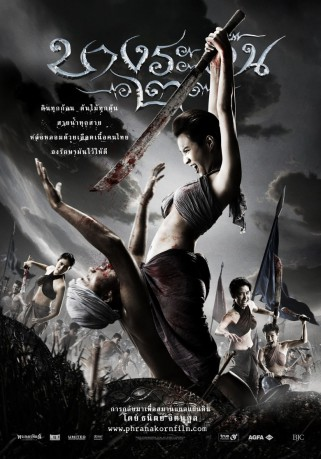

#6121 Bang Rajan - Blood Fight
 
 IMDB-Wertung: 5.5 / 10
IMDB-Wertung: 5.5 / 10  Metascore: 0
Metascore: 0 
Siam, Mitte des 18. Jahrhunderts: Burmesische Truppen überfallen das Land mit unvorstellbarer Brutalität: Paläste und Klöster werden geplündert, die Einwohner in die Sklaverei verschleppt. Niemand stellt sich dem Terror des Invasoren, entgegen – bis der Mönch Thammachot eine Gruppe unerschrockener Krieger sammelt und in ein blutigen Guerilla-Krieg gegen den scheinbar übermächtigen Gegner führt…
Jahr: 2010
Dauer: 127 Minuten
FSK: 18
Land: Thailand Studio: Eagle EntertainmentTonspuren:
Untertitel: Deutsch,
Auflösung: 1080p (1920x816) Größe: 9543 MB
Genre: Action, Abenteuer, Krieg
Regisseur: Tanit Jitnukul
Drehbuch: Yu Wang
Soundtrack:
Darsteller:
- Chatchai Plengpanich als
- Puri Hiranyapluek als
Datei: X:\FSK18-Eastern-Collections\Bang Rajan\Bang Rajan - Blood Fight (2010, FSK18, 1920x816).mkv seit 03.05.2017
Festplatte: FSK18
 Alle Filme aus Gruppe 'FSK18-Eastern-Collections\Bang Rajan'
Alle Filme aus Gruppe 'FSK18-Eastern-Collections\Bang Rajan'